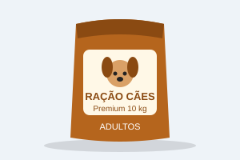
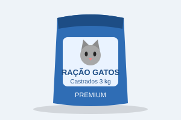
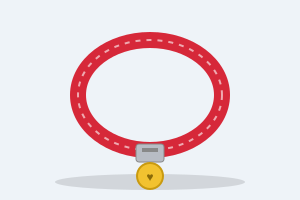
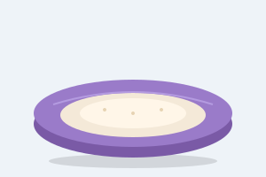

Ração Premium para Cães Adultos 10 kg

Ração completa e balanceada, com proteínas de alta qualidade, para cães adultos de todas as raças.
Valor: R$ 189,90
Cuidado e carinho para o seu melhor amigo | Porto Alegre - RS | Tel.: (51) 3000-0000

Ração completa e balanceada, com proteínas de alta qualidade, para cães adultos de todas as raças.
Valor: R$ 189,90
Brinquedo mordedor durável que ajuda a manter os dentes limpos e reduz o estresse.
Valor: R$ 34,90

Ração com controle de peso e cuidado com o trato urinário, indicada para gatos castrados.
Valor: R$ 99,90
Arranhador estável com base revestida, ideal para exercitar as garras e diminuir danos aos móveis.
Valor: R$ 79,90

Coleira de nylon macio, ajustável, com espaço para plaquinha de identificação. Tamanho M.
Valor: R$ 29,90

Cama acolchoada, lavável, com borda alta para o pet se sentir protegido.
Valor: R$ 119,90